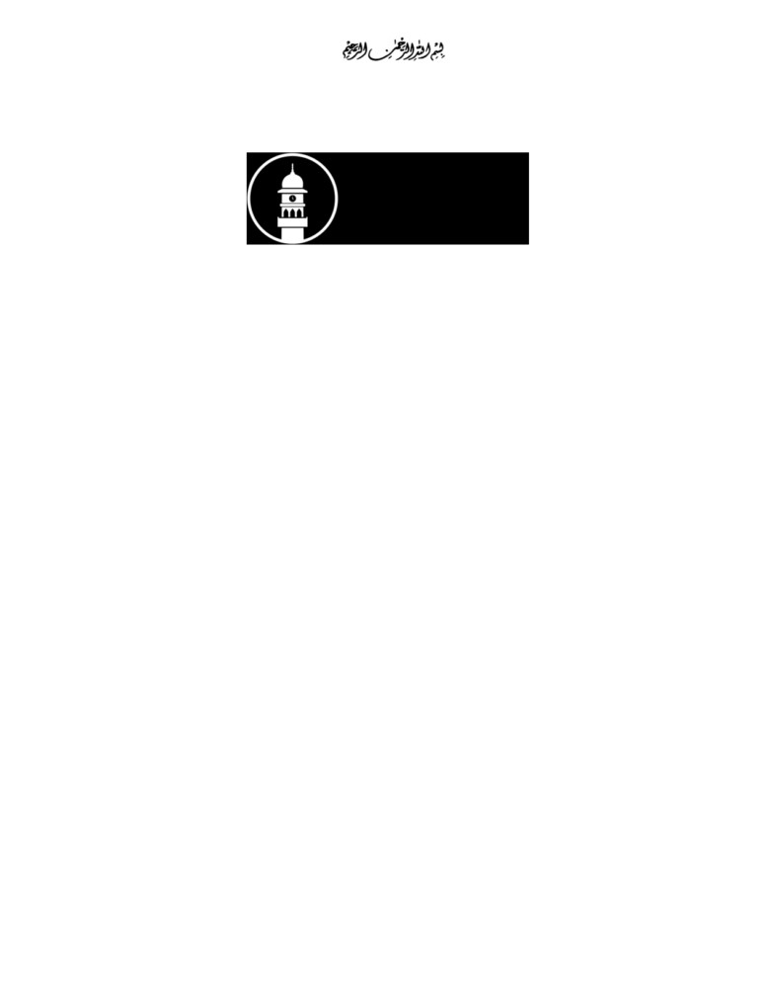
On-line Reporting Portal
USER GUIDE
Department of National General Secretary
hmadiyya Muslim Jama‘at Canada
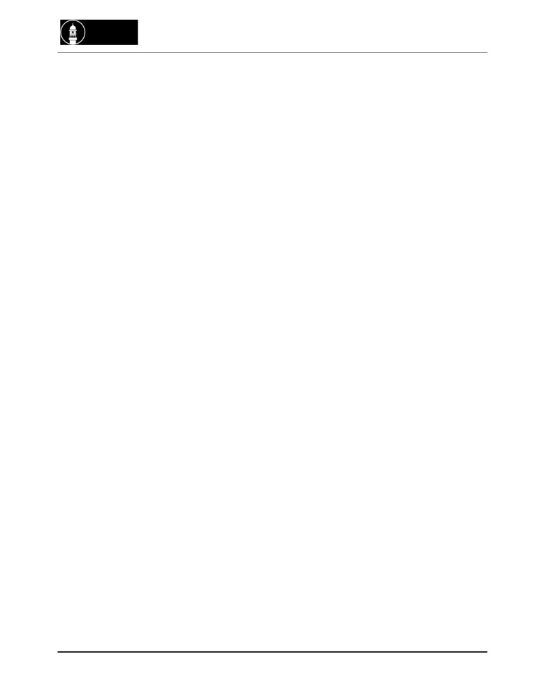
Revision History
V.1.0 - Initial version
V.1.1 - Oct. 10, 2010
V.1.2 - Sept. 2, 2013
V.1.3 - Nov. 6, 2014
V.1.4 - Aug. 10, 2015
V.2.0 - Oct. 2, 2015
This document is the property of the Office of National General Secretary. No part of this document is to be
reproduced without prior written permission from the Office of General Secretary.
National General Secretary can be contacted at:
905 832 2669 ext. 2243
gs@ahmadiyya.ca
fax: 905 832 3220
Online Reporting Portal - User Guide
Page | 2
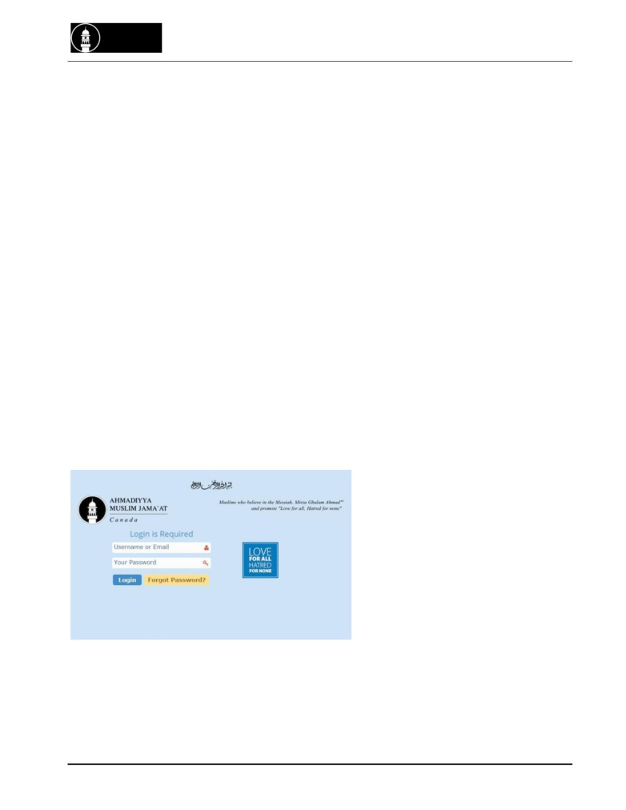
Purpose
The Online Reporting System is built to facilitate the timely submission of departmental reports and other
administrative functions. This User Guide provides the reader with the information needed to use this
system.
What is needed?
Each office bearer needs to have a User ID, and a Password. This information is provided by the General
Secretary of the Jama‘at or the National General Secretary and should be kept confidential.
Report Submission Process
The report submission process consists of the following easy steps:
Step 1: Login
Step 2: Prepare/Edit Report
Step 3: Submit
Before beginning, one should familiarize with the reporting system user interface.
1. User Login
Go to https://reports.ahmadiyya.ca. The main login screen will appear.
Insert the login information in
the respective fields to access
the reporting system. You can
login with your email address
or with your username.
Online Reporting Portal - User Guide
Page | 3
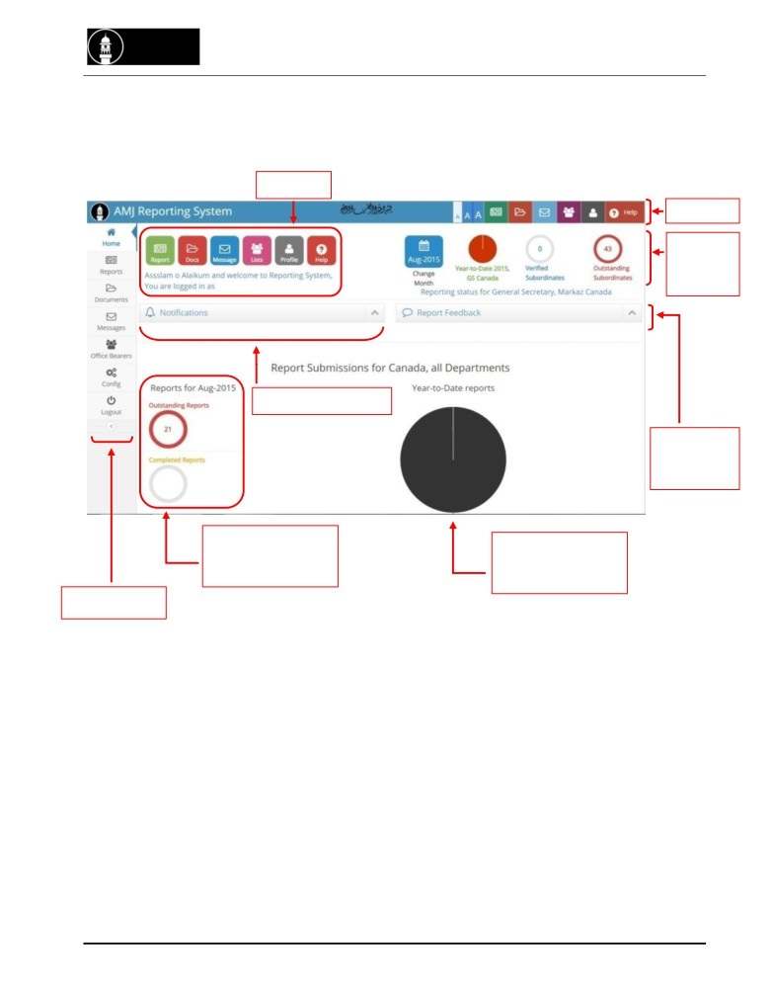
2. Reporting System Home Page
After a successful login, the main dashboard will appear. What information is displayed depends on which
office bearer is logging in.
Shortcuts
Shortcuts
Information
about your
Department
General Notifications
Feedback
Regarding
your Reports
Report Submissions
Report Submissions
Stats for the Current
Information for the
Month
Year
Menu Buttons
This page is divided into a few different sections.
1. Menu Shortcuts:
a. There are 3 different sets of menu shortcuts that allow access the major tools of the site.
2. General Notifications
a. Any alerts or actions from the system. This includes emails from Markaz as well.
3. Feedback Regarding your Reports
a. Contains reporting feedback received by the Jama‘at/Markaz.
4. Report Submissions Stats for the Current Month
5. Report Submissions Information for the Year
a. Shows at a glance the YTD information about your department.
6. Information Regarding the Department of the person logged in
Online Reporting Portal - User Guide
Page | 4
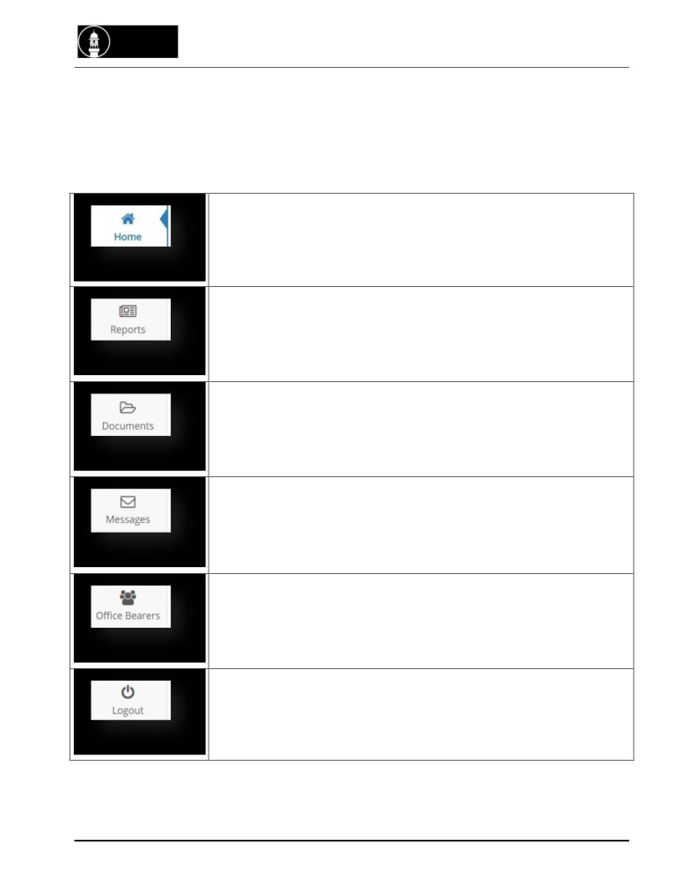
Menu Buttons
The various tabs available in the Menu on the left:
Home:
Click here to go back to the main dashboard from anywhere in
the site.
Reports:
Click here to create new reports, show lists of all previous reports
categorized by Branch and Department, as well as create
comprehensive analysis of each Branch and Department.
Documents: Click here to view a list of various Jama‘at documents covering a
range of topics. Users can upload their own documents and set
security policies allowing only designated members to access
those documents. This is the most secure way to transfer
documents.
Messages:
Click here to access the inbox to read messages you have
received from other users, the reporting system alerts, as well as
compose emails to send to other users.
Office Bearers: Click here to view a list of all the current office bearers of each
Branch related to a Department in the country.
Logout:
Click here to log out of the reporting portal.
Online Reporting Portal - User Guide
Page | 5
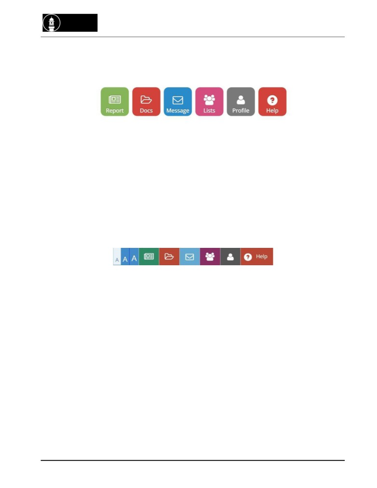
Menu Shortcuts
These tabs include some of the same shortcuts as the Menu Buttons, such as the Report, Documents, and
Message tabs, which all link to their respective pages. There are also three new shortcuts included here:
Lists:
The user has the ability to search and sort through the list of Office Bearers (related to the
department) by Name, Username, Phone Number, Email, Branch, and Department.
Profile: This shortcut links the users to their profile. They can view and change their basic personal
information. The users can also change their password as well as change personal settings for the
reporting site such as text size, color, etc.
Help:
A comprehensive help section is available with Q/A sections, a complete User Guide & helpful
videos.
These shortcuts are identical to the above Dashboard Shortcuts with the addition of a Text Size tab, which
allows the user to instantly change the size of all text and buttons throughout the site by choosing one of the
three available options. These Shortcuts are also available site wide, and can be accessed from the top menu.
Online Reporting Portal - User Guide
Page | 6
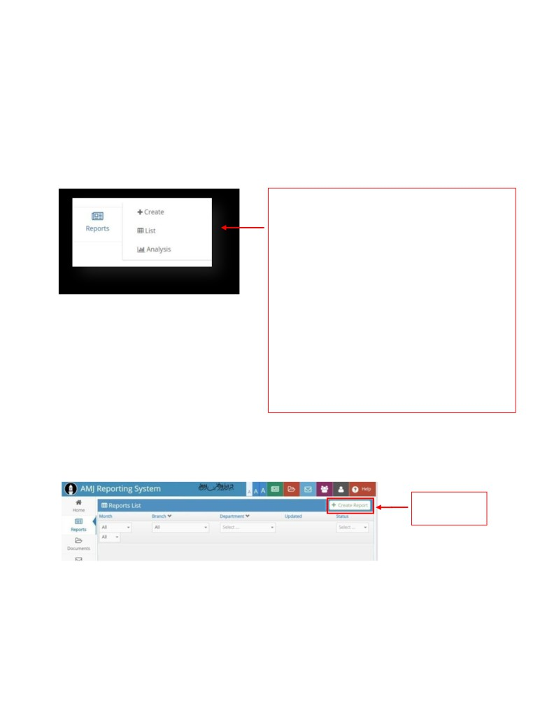
MIDDLE SECTION: MAIN REPORTING OPTIONS
DEPARTMENTAL REPORTS
The following section explains the process of submitting a new report, editing a
previously saved draft report, and viewing previously submitted reports.
Submitting a New Report
Clicking on the Reports button will
open the drop down menu that
provides the option for:
Creating new reports
List view of reports to:
o Edit previously created
reports or
o View previously submitted
reports.
Analysis
To create a new report press the Create button in the drop down menu or click on the link as shown below:
Click to create
new report
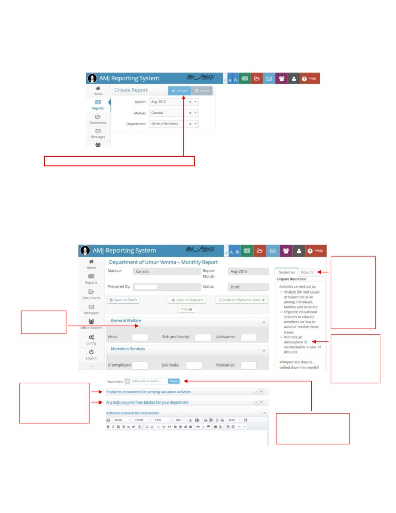
When the Create Report section is clicked, some questions are asked. For example, to submit a report for the
General Secretary Department for the month of August 2015, select General Secretary in the drop down
menu for Department. Similarly select Aug-2015 for month and the name of your branch.
Click on Create button to create the monthly report
Note: Various departments have their specific questions that their respective secretaries have to fill out.
In the text box below this instruction, you can list down all the activities for the month. You can also attach a
file related to your report that has details of the activities.
Note: Please attach documents ONLY when necessary. It is preferable that report is submitted in text form in
the given fields.
The TJ tab
provides
the rules as
specified in
the Tahrik
Jadid Rule
Book
Questions/
Instructions
Guidelines
provides with
hints for
preparing
the report
These questions are
marked NO by
default. Only fill if
required.
To attach a file, click
on Choose to upload
the file
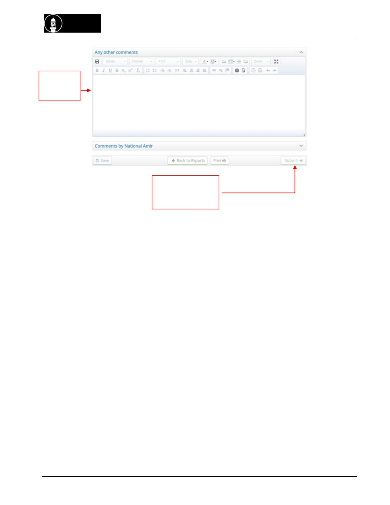
General
comments
section
Click on the Submit
button when the
report is complete
NOTE: A report can be saved as draft at any time. Once it is complete, the Secretary submits the report to
the local Amir /Sadr for review and verification.
Online Reporting Portal - User Guide
Page | 9
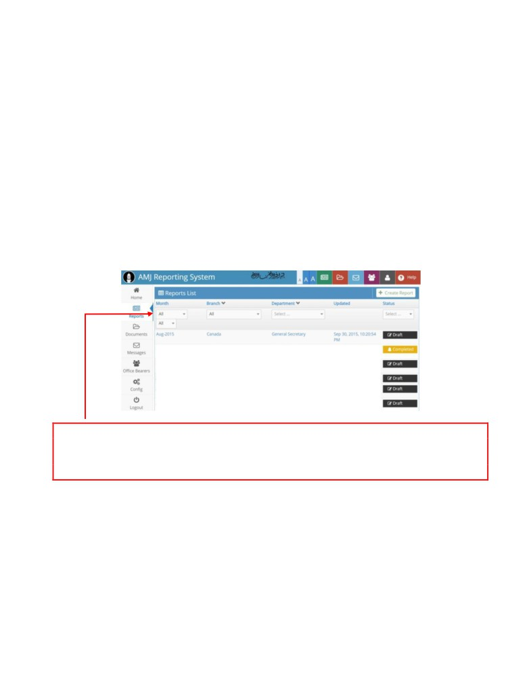
SUMMARY
The report submission process can be summarized as follows:
2- From Reports, go to +Create.
3- Select the month to create the report for. In case the person logged in has more than one
department, select the department as well.
4- Answer all relevant questions and report the activities for the month.
5- Save as draft to come back to it at a later time; or press Submit to send the report for the local
Amir/Sadr.
6- Local Amir/Sadr reviews and submits the report.
Viewing Reports
To view a previously submitted report, go to Reports and click on List in the drop down menu.
Select the various parameters on top of the page. For example, to view the report of General Secretary
Department for August 2015 which was saved as Draft, select August under Month, 2015 in Year, General
Secretary in Department and select Draft in Status. As the selections are being made the list dynamically
becomes shorter.
To Edit or View a report saved as Draft, click on the link of the report.
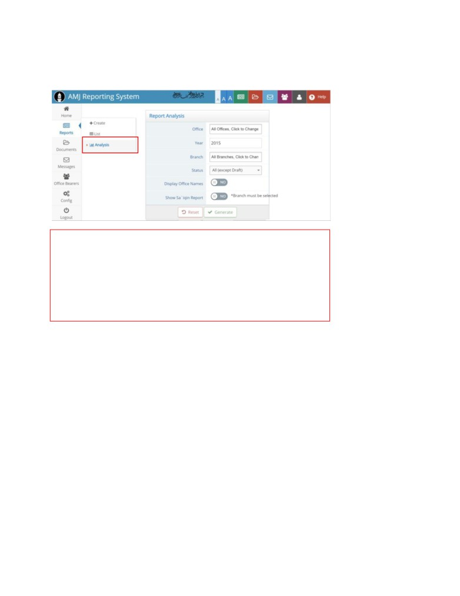
ANALYSIS
The following section explains the Analysis option in the left menu:
1. Office - select a specific department
2. Year - type in a specific year
3. Branch - select the branch
4. Status - select the status of the reports to be analyzed
5. Display Office Names - shows for each month which department
submitted the report and its status
6. Show Sa’iqin Report - shows the status of ‘ mila meetings, Ijlas ‘ m
meeting and Sa’iqin activity report
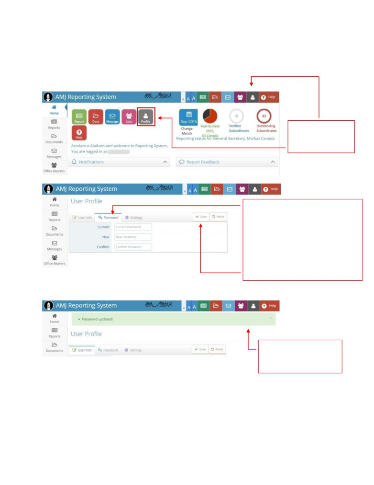
PASSWORD
The following section explains the Password Change option in the User Profile menu:
Change Your Password
1. In the Home
window click on the
Profile icon.
2. In the User Profile section click on
the Password tab.
3. Type in the current password in the
Current Password field.
4. In the New Password field, enter
the new password.
5. In the Confirm Password field, re-
enter the new password.
6. Click on the Save button.
Once the new password is
saved, a confirmation
message will be displayed.
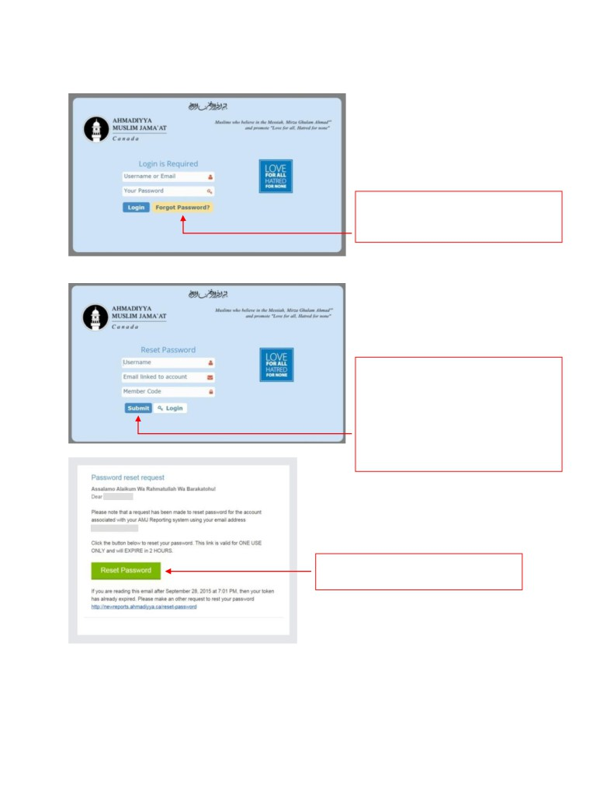
PASSWORD RECOVERY
1. On the Login Screen click on the
Forgot Password link to be redirected
to the next page.
2. Type in the Username, Email address
linked to the account and your
Member Code in the respective fields.
3. Click on the Submit button.
4. If any of the three pieces of
information asked do not match, an
error will be displayed.
5. Click on the Reset Password button to
initiate the reset.
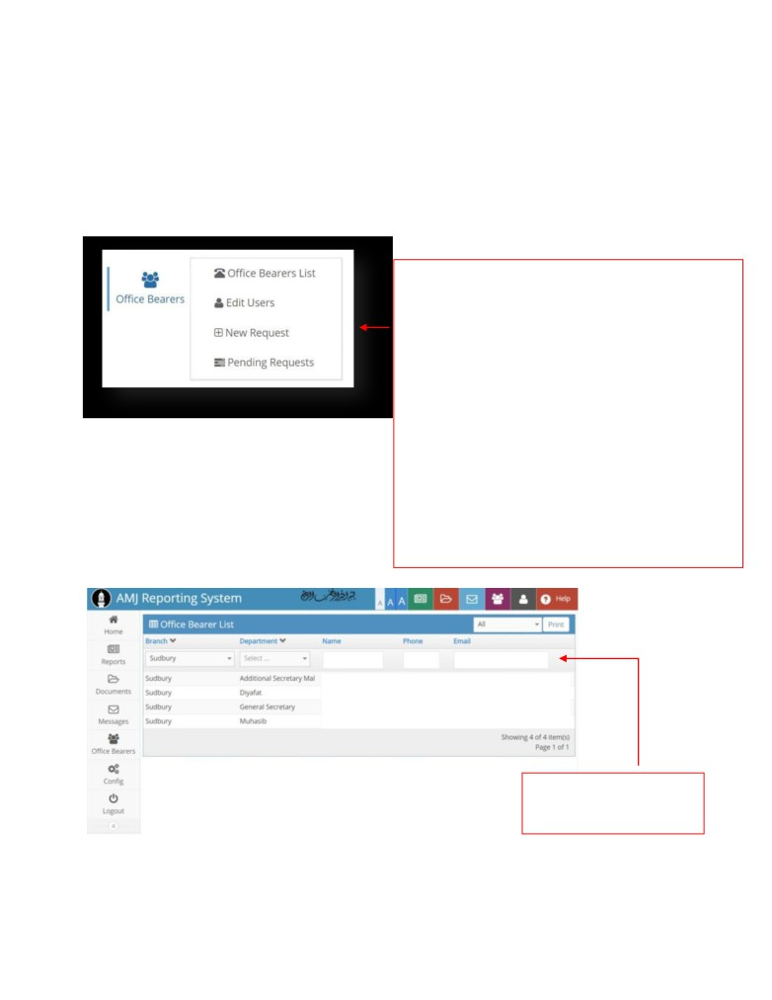
BRANCH USERS
This section is for Local Amir/President and General Secretary only. The following
section explains the use of Branch User option in the menu.
Viewing Branch Users
Clicking on the Office Bearers button will bring up
the drop down menu with the following options:
1. Office Bearers List
Contains contact information of office
bearers.
2. Edit Users
Modify and change information about office
bearers.
3. New Requests
Submit a request to change or add office
bearers.
4. Pending Requests
Status of Office Assignment Requests.
The list can be customized
be selecting the various filler
fields on the top.
NOTE: Only the local Amir/Sadr or General Secretary of a Jama‘at has the ability to add or edit an
Office Bearer.
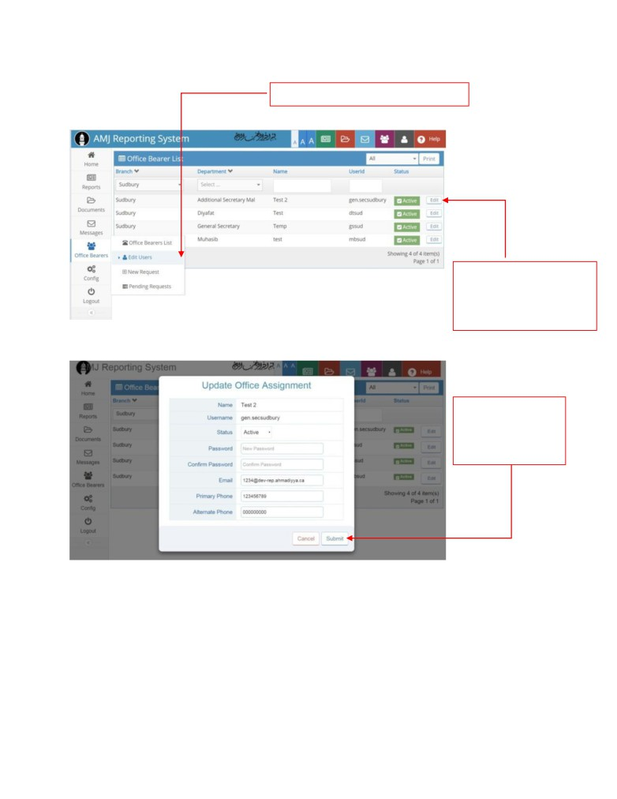
Edit Office Bearers Info
Click on Edit Users in the drop down list
Click on the Edit button to
modify the information of
the Office Bearer on the
popup screen
Once the changes
are made, click on
the Submit button to
save the changes.
Once approved by the National General Secretary’s office, the status will be marked as Active.
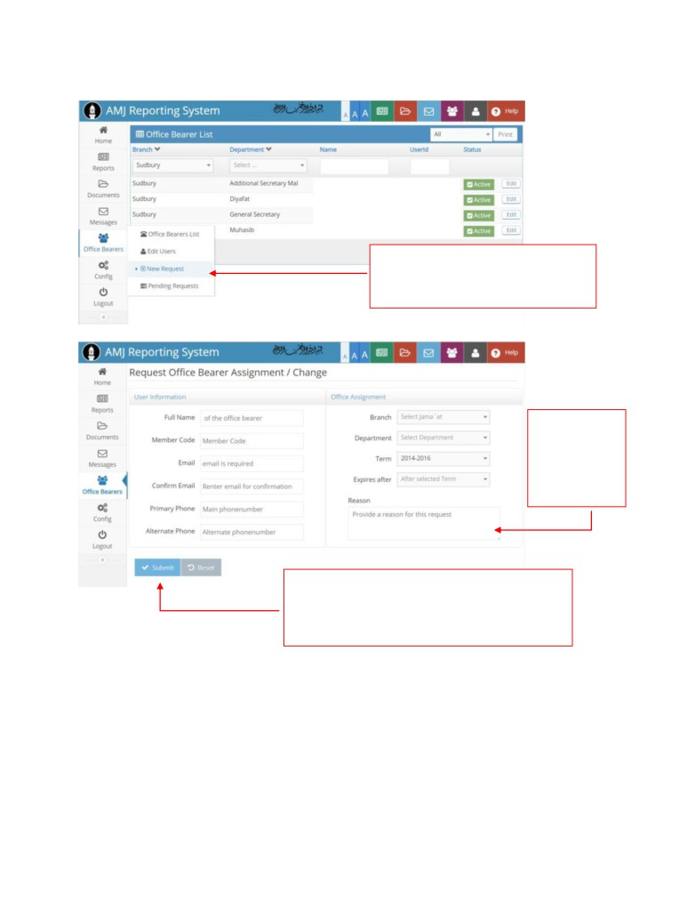
Add New Branch User
Click on the New Request button in the
drop down list to enter the information
of the new Office Bearer.
A reason for
the request to
initiate the
change needs
to be provided
Once you all the required information is entered,
click on the Submit button. The status of the edited
user will become Active once verified and approved
by National Markaz.
Conclusion
Once understood properly, the report submission tool will make it easier to submit and manage
reports online. Enhancements to this tool will be brought as required and the users will be updated
about the enhancements.
For any further information, please contact the National General Secretary’s Office at:
905-303-4000 ext. 2243